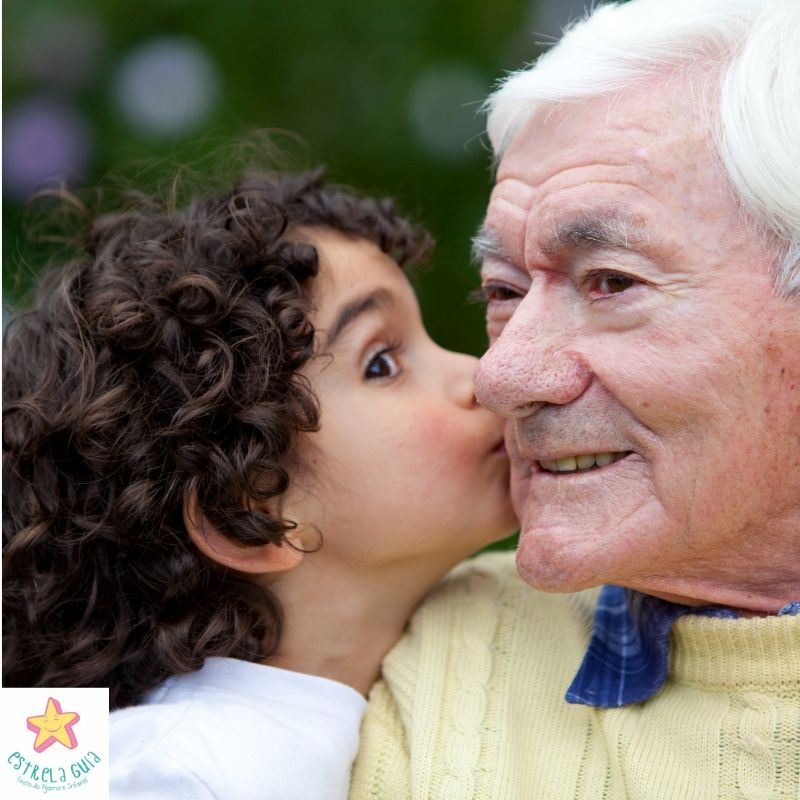

تدريب اطفال من سن 5 سنوات و مواعيد مخصصه ل كبار السن
مشاركات في افضل البطولات
مميزات الكيك بوكسينغ
حرق الدهون رياضة الكيك بوكسينغ من أكثر الرياضات القوية التي تحتوي على حركة كثيرة وتمارين عالية الطاقة تساعد على حرق دهون البطن العنيدة، فالدهون الزائدة لدى الإنسان تحدث له العديد من المشاكل مثل خطر الإصابة بمرض القلب والسكري وغيرها، وحسب المجلس الأمريكي للممارسة (ACE) يحرق اللاعبون كم من الدهون خلال ممارستهم الرياضة في الجزأين العلوي والسفلي أثناء ممارسة الكيك بوكسينغ. يقلل من التوتر إذا شعرت ببعض التوتر قم بلعب الكيك بوكسينغ، فسيساعدك ذلك على تحسين صحتك العقلية لأنه يزيد من إطلاق مادة الاندورفين، التي تساعد على تقليل مستويات الإجهاد. يحسن وضعية الجسم إذا كان الجسم غير متناسق فإن تلك الرياضة من أكثر الرياضات التي ستحسن وضع جسمك، وتناسقه وستزيد من كتلتك العضلية، وتقويك في الاستجابة السريعة، فهي رياضة قوة إلى أنها تحتاج الذكاء أثناء اللعب ولهذا فهي ستنمي ذكائك والسرعة في ردة الفعل وستجعل انتباهك مشدود دائماً لتجنب الضربات وصدها وردها مرة أخري إلى الخصم، كما ستمنحك اللكمات والركلات في لعبة الكيك بوكسينغ العديد من الفرص للتركيز في حركاتك وفي توزيع طاقتك على الوقت الذي تمارس فيه الرياضة على جميع جسمك. سيجعل جسمك متناغم ستلعب الكيك بوكسينغ على أن يكون جسمك كله متناسق ومتناغم، فهي تعتمد على الحركة الكثيرة وتشترك كل عضلات جسمك وأعضائك في اللعبة والقتال، وهذا سيزيد من حرقك للدهون، كما أن مشاركة جميع العضلات في القتال وأثناء ممارسة تمارين اللعبة ستساعدك على التنسيق بين عضلاتك، كما أن الحركة المستمرة ستكسب جسمك مرونة فعل عالية. يعزز الكيك بوكس طاقة جسمك الكيك بوكسينغ هو روتين ذو طاقة عالية يعزز جسمك وعقلك ويزيد من مستوي الطاقة لديك، سوف يقوم بتزويد خلايا جسمك بالمزيد من الطاقة التي تعمم الأكسجين وتوزعه على جميع أجزاء جسمك، كما تعزز خلايا جسمك بمزيد من الطاقة اللازمة للحرق. تشحذ العقل تشحذ الكيك بوكس العقل وتجعله منتبه دائماُ للاستجابة للركلات واللكمات وردود الفعل السريعة والتفكير بالصد الركلات وردها مرة أخري بسرعة وفي المكان الصحيح، كل هذا سيعلم العقل أن يفكر بطريقة أسرع ويتصرف بطريقة أسرع، ويبقي دائماً منتبه لما يدور حولك وما يحدث خلف عينيك وأذنيك، وستتعلم أن تكون كل جوارحك في يقظة دائمة.
ما هو الكيك بوكسينغ
🥊 الكيك بوكسينغ ( kick boxing) الترجمة الحرفية لكلمة الكيك( kick) يعني الركل أو الرفس وكلمة بوكسينغ ( boxing) يعني الملاكمة أذن تسمى رياضة الركل واللكم , يمارس الكيك بوكسينغ في حلبة ملاكمة باستخدام قفازات الملاكمة، وواقيات الفم. ويمارس غالبا للدفاع عن النفس أو اللياقة العامة أو المنافسة 🥊 لاعب كيك بوكسينغ لابد أن يكون ملاكما ولاعب فنون قتالية جيدا في آن واحد ويتمتع بالمرونة والسرعة والقوة و رد الفعل السريع والتحمل العالي لشدة التدريبات العنيفة ويمتلك التوافق الحركي والتنسيق بين الرفس واللكم ويمكن القول أن استخدام الركل واللكم وبنسب متساوية.قد يتضمن kickboxing أيضاً ضربات الركبة ، ضربات الكوع . 🥊 تاريخ الكيك بوكسينغ تأسس في بداية السبعينات في أمريكا بعد الحاجة للعبة اكثر تطور من الفنون القتالية الموجودة مثل الكراتية والكونغ فو والتايكواندو التي أصبحت حكرا للدول شرق آسيا ، وبدأ ينتشر بسرعة كبير في العالم ، كان جوي لويس “Joe Lewis” بطلُ الكاراتيه الأمريكي، هو الرائدُ الأولُ في رياضةِ الكيك بوكسينغ والتي أُطلق عليها بادئ الأمر اسم الكاراتيه ذات الاحتكاك الكامل “Full Conta